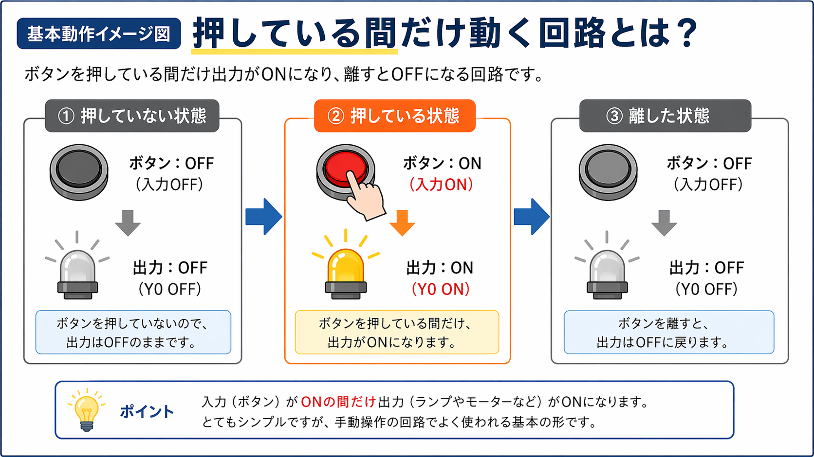
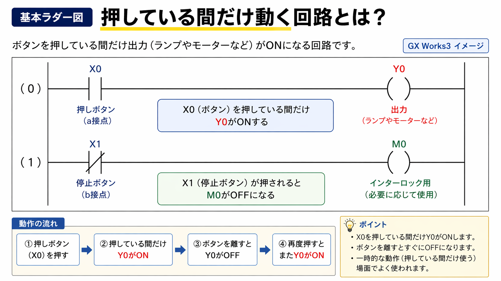

向いている人
- PLCを始めたばかりの人
- 自己保持回路との違いを整理したい人
- 手動操作の基本回路を知りたい人
- GX Works3でシンプルなa接点回路を読みたい人
押している間だけ動く回路は、ボタンやスイッチを押している間だけ出力がONになり、離すとOFFに戻る基本回路です。 GX Works3を前提に、現場で追いやすい見方で整理しました。

押している間だけ動く回路は、入力がONしている間だけ、そのまま出力もONする基本回路です。 ボタンを離すと入力がOFFになり、出力もすぐOFFに戻ります。
押している間だけ動く回路とは、ボタンやスイッチを押している間だけ出力がONになり、離すとOFFに戻る回路です。
かなりシンプルな回路ですが、現場では意外とよく使います。 たとえば、押している間だけブザーを鳴らしたい時や、押している間だけモーターやシリンダを動かしたい時などに使います。
自己保持回路のように、一度押したら押し続けなくても動く回路とは違って、押している間だけ有効なのがポイントです。
現場では、自動運転ではなく手動で一時的に動かしたい場面で使いやすいです。
設備の点検や試運転で、少しだけ動きを見たい時に向いています。 押している間だけ動くので、離せばすぐ止まるのも扱いやすいです。
手動でワークを少し動かしたい時や、位置合わせのために少しだけ動かしたい時に使います。
ブザー、ランプ、電磁弁、モーターなどを、一時的にだけ動かしたい時に使います。
一番基本の形はこれです。
つまり、入力の状態がそのまま出力に反映される形です。 ここではタイマーも自己保持も使わず、かなり基本的な回路になります。
GX Works3で見る時も、まずは次の3つを見れば分かりやすいです。
押しボタンなのか、スイッチなのか、センサなのかを見ます。 今回は「押している間だけ」なので、手動ボタンを想定すると分かりやすいです。
基本形では、入力のa接点をそのまま使うことが多いです。 入力がONなら導通して、出力もONになります。
ランプなのか、モーターなのか、バルブなのかを見ると、回路の目的が分かりやすいです。

基本ラダーはかなりシンプルです。
これだけでも成立します。
見方としては、
です。
逆に、
になります。
この形は、PLCのかなり基本に近いので、最初にしっかり見られるようにしておくと後が楽です。
似て見える回路ですが、起動・停止回路とは意味が違います。
つまり、
という違いがあります。
ワンショット回路とも違います。
つまり、
です。 ここを分けて考えると、かなり整理しやすいです。
この回路は、押している間ずっと出力がONです。 そのため、長く押すとその間ずっと動き続けます。
一度押したら動き続ける回路ではありません。 離したら止まる、というのが基本です。
この回路は手動確認には向いていますが、通常の自動運転にはそのままだと向かないこともあります。 使いどころを分けて考えることが大事です。
最初はこの形だけ覚えるとかなり楽です。
これが分かると、
との違いも見やすくなります。
押している間だけ動く回路とは、入力がONしている間だけ、そのまま出力もONする基本回路です。
かなりシンプルですが、
でよく使います。
GX Works3で見る時も、
この順で追えばかなり分かりやすいです。